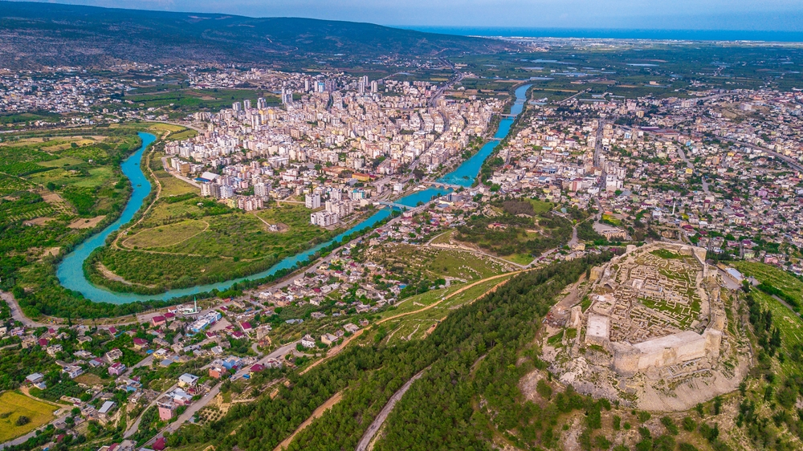
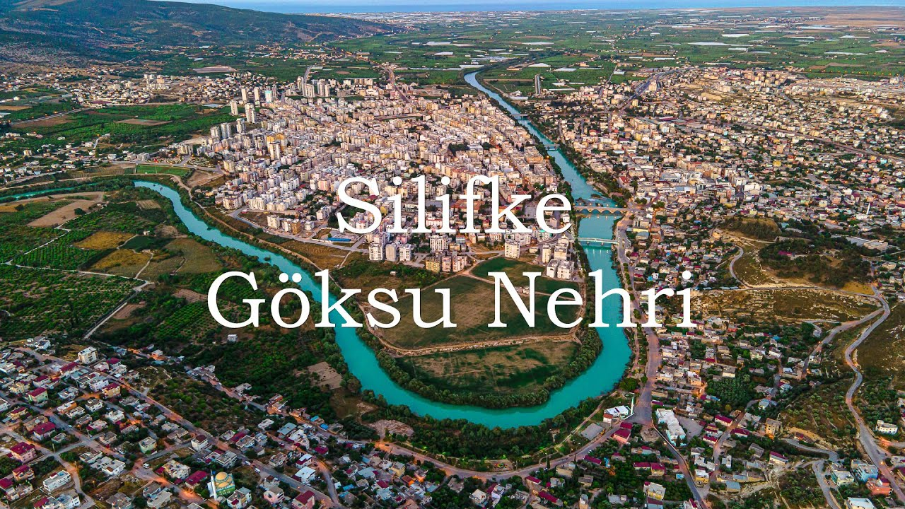
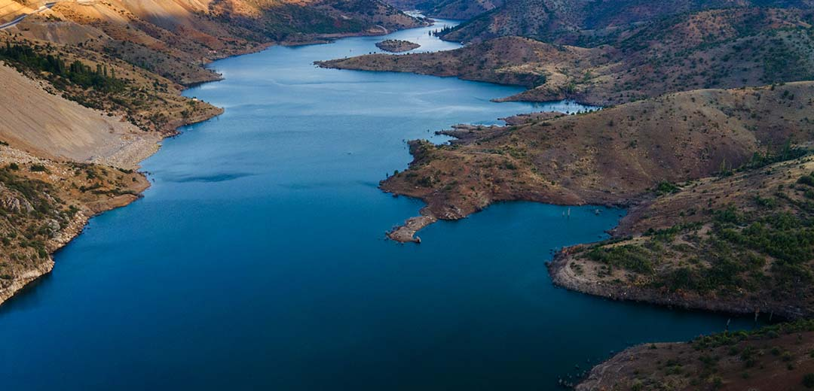

Karaman, Konya ve Antalya’dan geçerek Akdeniz’e dökülen Göksu Nehri, rafting gibi ekstrem su sporları için en ideal yerlerden biri olarak biliniyor. Yerköprü Şelalesi ile benzer bir yapıya sahip olan Göksu Nehri, rafting için oldukça büyük bir uygunluk sağlıyor. Bu gibi sebepler dolayısıyla bölgeye gelen turistlerin oldukça sık şekilde tercih ettikleri Göksu Nehri özellikle yaz aylarında çok kalabalık hale geliyor. Keyifli bir gün geçirmenizi sağlayan ve daha önce denemediğimiz farklılıkları denemeniz konusunda sizlere yardımcı olan Göksu Nehri etrafında yeme içme ihtiyacını karşılayabileceğiniz işletmelerde bulunuyor.
  